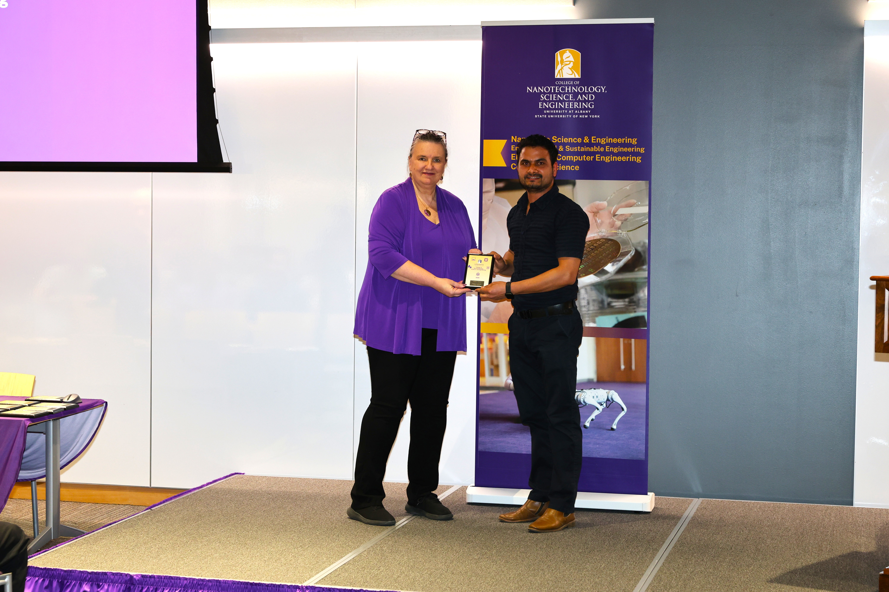

Welcome
I am a doctoral researcher and Research Project Assistant in Environmental and Sustainable Engineering at the University at Albany, SUNY. My research focuses on the environmental fate, transport, bioaccumulation, and sustainable remediation of PFAS and other emerging contaminants, with particular interest in soil–water–plant systems.
My work combines environmental chemistry, plant uptake studies, analytical characterization, data analysis, and contaminant risk assessment to better understand how persistent contaminants move through environmental and agricultural systems and how their impacts can be mitigated.
Research Interests
- Environmental fate and transport of PFAS and other emerging contaminants
- PFAS bioaccumulation, plant uptake, and translocation in edible crops
- Fate of contaminants in biosolids-amended agricultural soils
- Sustainable remediation, sorption, stabilization, and phytoremediation
- Environmental risk assessment and contaminant analysis in aqueous and solid matrices
Current Research
Investigating PFAS bioaccumulation behavior, uptake mechanisms, and food-quality implications in edible crops.
PFAS in land-applied biosolids in agricultural settings: mechanistic understanding of fate and mitigation.
Selected Publications
For the complete and most current list, see my Google Scholar profile.
- Ilango, A. K.; Urucu, O. A.; Kharel, M.; Liang, Y. (2026). Enhancement of Per- and Polyfluoroalkyl Substance Uptake from Contaminated Soil by Applying Plant Growth Regulators: Screening and Cross-Species Evaluation. ACS ES&T Engineering. Article
- Ilango, A. K.; Kharel, M.; Zhang, W.; Liang, Y. (2026). PFAS Uptake by Plants in Soils Amended with Biosolids Derived from Wastewater with Industrial Input. ACS Environmental Au. Article
- Kharel, M.; Zuo, Y.; Zhang, W. (2025). Evaluation and Comparison of Three Common Methods for PFAS Extraction from Soybean Tissues. ACS Agricultural Science & Technology. Article
- Kharel, M.; Tian, M.; Vu, T.; Miao, Y.; Zhang, W. (2025). PFAS in Plant-Biosolids-Soil Systems: Distribution, Fractionation, and Effects on Soil Microbial Communities. Journal of Hazardous Materials, 497, 139754. DOI
- Kandel, K. P.; Adhikari, M.; Kharel, M.; et al. (2022). Comparative Study on Material Properties of Wood-Ash Alkali and Commercial Alkali Treated Sterculia Fiber. Cellulose, 29, 5913–5922. DOI
- Kharel, M.; Chalise, S.; Chalise, B.; et al. (2021). Assessing Volatile Organic Compound Level in Selected Workplaces of Kathmandu Valley. Heliyon, 7(11), e08262. DOI
Book Chapter
- Zhang, W.; Kharel, M. (2026). Analytic Methods for Aqueous Contaminants. In Aqueous Contaminant Adsorption: Fundamentals and Methodological Guidelines. Elsevier. (Accepted)
Honors & Awards
- Highest Academic Achievement Award — Spring 2026, CNSE, University at Albany, SUNY
- John J. Sullivan Award — Spring 2026, CNSE, University at Albany, SUNY
- Benevolent Association Research and Creative Activity Grant — Spring 2026, University at Albany, SUNY
- John J. Sullivan Award — Spring 2025, CNSE, University at Albany, SUNY
- Benevolent Association Research and Creative Activity Grant — Fall 2024, University at Albany, SUNY
Research & Academic Highlights


Contact
Department of Environmental & Sustainable Engineering
College of Nanotechnology, Science, and Engineering
University at Albany, SUNY
Albany, NY, USA
Email: Academic Email Personal Email